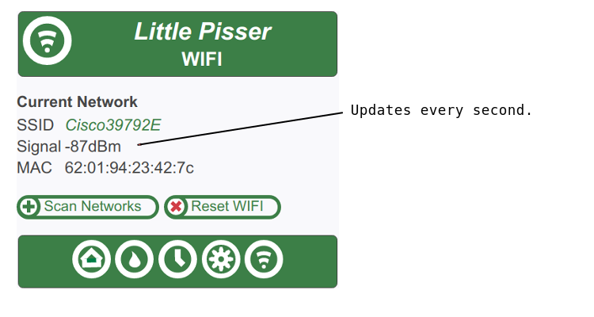

Before settling on a location for the WSC-LP1 you should perform a signal survey. This will tell you whether your intended location has acceptable reception, and in marginal cases, whether one particular location is better than another.
To perform a signal survey you need
Start a browser on your LAN-connected device. Browse to the WSC-LP1 WIFI page, such as http://192.168.1.xxx/wifi.html
Move the WSC-LP1 around and monitor the signal level reported on your browser. Give the signal a few seconds to settle at each test location.
If your WIFI channel is not crowded, anything greater then -90dBm will work (i.e. -89dBm or greater.) The signal can go as low as -95dBm and still be useable, but the controller may become unresponsive from time to time.
If your WIFI channel is crowded, say you have neighbors sharing the same channel, then you want a signal closer to -85dBm.
If your browser can't connect to the WSC-LP1 at all, move the controller closer to your WIFI LAN access point until you get a solid connection. Then move away little by little till the signal becomes marginal. If you lose the WIFI signal before getting close to your intended mounting location, then see this topic.